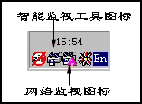
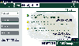
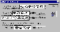
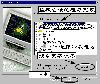
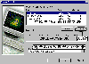

|
|
| 当前位置：电脑报电子版 > 1999 年 > 46 期 > 软件世界 > 一步一步学Norton CleanSweep2000 |
| 《 一步一步学Norton CleanSweep2000 》 |
一、CleanSweep，最好的系统清洁工具 如果要问什么是最好的系统清洁工具，则《电脑报》今年第39期试刊的《磁盘清洁工具》评测报告，给出了最明确的回答：Norton CleanSweep。该报告对Norton CleanSweep的评价是：“可操作性表现非常好，在应用程序卸载方面表现非常出色，具有的移动、传输功能非常出色……它的安装监视功能和磁盘监视功能，可以时刻监视系统和磁盘的各个动作，为以后进行卸载和清除提供依据资料”。在那次评测中，Norton CleanSweep在多个功能测试中名列第一，在清除垃圾文件功能测试中名列第二，并且有非常丰富的附属功能。只是系统资源占用最多。那次评测中使用到的Norton CleanSweep的版本为451。目前最新版本为47，称为Norton CleanSweep 2000。Norton CleanSweep 2000作为一个重要工具收录到Norton的工具集SystemWorks 2000，Norton SystemWorks 2000作为一个大型的商业工具软件，包含了著名的诺顿工具箱Norton Utilities、诺顿防病毒工具Norton AntiVirus等。Norton CleanSweep 2000也可以作为一个单独的工具使用。该软件试用版的官方下载地址为wwwsymanteccom，国内的下载地址为http:∥wwwnewhuacom/NortonCleanSweephtm。但下载文件多达10MB。 提示：Norton CleanSweep 2000只能在Win95/98和WinNT系统中使用，不能在Windows 2000中使用。 二、CleanSweep可以干些什么？ CleanSweep其实包括了多种工具，如程序反安装、程序备份和还原、程序移动和移植、系统清洁、系统设置、查看系统信息等，可以说它是一个全面的系统清洁工具。CleanSweep的主要功能： ●彻底、干净、安全地卸载程序。 ●自动快速地清除系统的多余文件和临时文件。 ●可以将卸载的程序还原。 ●可以清除网络浏览中产生的各种垃圾文件。 ●可以备份、压缩、移动、移植程序。 ●可以进行注册表、DLL文件等特殊项目的清理。 ●可以设置文件清除的安全级别。 ●可以实时检测程序的安装和网络下载。 三、安装和启动 CleanSweep的安装比较简单，但安装过程中有较多的对话窗口，一般按“Next”或“确定”按钮就可以了。安装完成后，系统将要求重新启动，启动后将自动执行一次磁盘扫描清理操作（见第7部分）。 CleanSweep有两个系统监视程序随着系统启动而启动，并驻留在内存中（可以在系统任务栏的状态区中看到这两个工具的状态图标，如图1），平时这两个监视工具就监视系统在磁盘中读写的一举一动，并能够自动进行清扫。双击工具的状态图标，可以进行查看和设置。如果要启动CleanSweep的主程序，可以点击桌面扫帚状的快捷启动图标Norton CleanSweep（也可以从开始菜单中启动），程序的主界面不是常见的Windows窗口界面，而是一个页面标签窗口（图2），界面右面列出了四个功能类别标签，分别是“CleanUp”（卸载程序和清除文件）、“Internet”（关于因特网的清扫项目）、“Programs”（程序的备份、移动等）、“Advanced”（其他高级清扫项目）。点击某个标签，界面右面窗口就列出其中的功能项，点击某个功能项，即可按照该功能项的操作向导开始操作。 CleanSweep的卸载很简单，通过开始菜单CleanSweep程序组中的“Uninstall”项即可。 提示：CleanSweep不能在运行中自己卸载自己，另外在卸载过程中要注意先关闭CleanSweep的两个监视工具。 四、监视记录程序的安装 CleanSweep最强大的功能就是能够记录程序的安装过程和文件的拷贝过程，这样在卸载程序的时候就可以做到心中有数。一般经过CleanSweep监视安装的程序，能够做到不留痕迹地卸载，所以，如果你经常试用软件，又想保持系统的整洁，使用CleanSweep的智能监视清扫工具是最好的选择。点击任务条状态栏中的CleanSweep的智能监视清扫工具图标，打开窗口（图3），然后选择“Start”启动记录，CleanSweep的智能监视工具就开始工作（可以看到状态栏图标闪动）。这时候，你的一切安装或拷贝工作都将被记录下来。安装或拷贝完成后，再打开图3所示的窗口，点击“Stop Logging”（停止记录），然后监视工具弹出一个对话窗口，提示已经记录安装或拷贝过程，你可以在下面的“Description”栏中添加本次记录的注释，例如“11月3日安装WPS2000”，点击“Summary”按钮可以查看安装或拷贝的详细细节。 提示：CleanSweep还有一个专门的工具，可以监视网络的下载，以提供浏览网络后清理遗留垃圾的工具，该工具自动运行，不需要设置。 五、安全、干净地卸载程序 卸载程序是CleanSweep的主要功能，使用CleanSweep卸载程序，可以做到最大程度的干净、彻底卸载。启动CleanSweep，选择“CleanUp”标签项，点击右面界面的第一项“Uninstall Wizard”（卸载向导），程序弹出向导窗口（图4）开始引导你卸载程序。 首先选择要卸载的程序，列表窗口前面两项是CleanSweep自动监视到的安装程序或下载程序（即上面第四部分介绍的“监视记录程序的安装”)。 如果要卸载以前安装的程序，一般都在“Start Menu/Programs”项中选择，该项目中列出了系统中所有已安装的程序。也可以选择有桌面快捷方式的程序（在“Desktop”项中选择）。选择好要卸载的程序后，点击“Next”。 提示：如果在列表窗口中找不到要卸载的程序，可以点击“Search”（搜索），在弹出的窗口中详细地查找某个程序或文件，可以找到在系统中安装的任何程序。 CleanSweep开始分析卸载程序，然后提示准备开始卸载程序。这时选择将卸载的程序备份到指定的路径，一般情况可以默认程序给出的备份路径，如果卸载的程序很大，可以另设路径（点击旁边的小按钮），甚至可以将卸载的程序备份到一台网络计算机上。点击“Next”继续。 提示：CleanSweep可以将备份的卸载程序再重新还原，如果卸载一段时间后，你确认不需要该程序了，可以再通过第六部分中的方法彻底删除备份。 这一步是询问是否对每删除一个项目都需你确认，一般选择“NO（recommended）”。 然后CleanSweep给出卸载程序的信息，点击“View”（查看）按钮可以看到具体的卸载文件。点击“Finish”（完成）即可开始卸载。 卸载完成后，CleanSweep给出卸载信息，点击“Summary”（摘要）可以查看卸载的详细信息。可以看到，CleanSweep卸载程序是非常完善、干净的。最后点击“Ok”即完成本次操作。 提示：有些程序最好不使用CleenSweep卸载，如IE浏览器、Office 2000、Norton工具箱、Microsoft Plus!等。 六、轻松恢复卸载的程序 如果要将卸载的某个程序重新还原，可以在“CleanUp”标签中选择“Restore”（恢复向导）。进入向导后，CLeanSweep提示是否恢复最近删除的程序，选择“No，let me select another item”（不，选择其他项目），点击“Next”。 在弹出列表窗口中选择备份的程序（图5），设置好要备份的路径，点击“Next”。 提示：可以在该窗口中将备份的数据删除（点击“Delete”按钮）。 程序提示是否恢复该卸载项目下的所有的文件，还是某一部份文件。一般选择“All the files”（全部），选择好后点击“Next”。 这一步，CleanSweep询问如果有相同的文件，是否覆盖，一般按照默认设置即可。点击“Next”。 这一步CleanSweep询问是否恢复到原来的位置。点击“Next”。提示如果你想将卸载的程序恢复到另外一个磁盘分区，可以选择“No，let me select the location”（不，自己选择位置）。 这一步CleanSweep给出恢复程序信息，点击“Finish”完成，即可开始恢复。 最后，提示将删除恢复程序的备份数据。 七、清理系统废旧、临时文件 CleanSweep还有一个快速安全进行磁盘清理的工具（点击“CleanUp”标签中的“Fast＆Safe Cleanup”项，即可打开向导操作窗口，也可以从开始菜单中启动）。这个工具类似于Win98中的磁盘清理工具，但功能更完善，包括网页临时文件、各种历史记录、回收站中文件、各种临时文件、丢失的文件等，还可以设置定期自动清理（图6）。该工具启动后自动扫描磁盘，并给出报告，这时可以点击“Clean Now”开始清除。八、清理网页浏览垃圾 因特网相关项目的清理，是一个比较多的项目（点击“Internet”标签，可以看到有5个具体的项目，如图7），因为我们在使用因特网的过程中，会产生很多临时文件，用手工的方法是很难清除的。注意，“Internet Uninstall”（网络下载项目）是CleanSweep监视到的下载文件和程序。九、程序的压缩、备份、移动、移植 CleanSweep提供了一些非常有用的功能，就是对已经安装的程序进行压缩备份、移动和移植。压缩程序（Archive Wizard）就是压缩已经安装的程序，如果使用比较少，可将这个程序打包压缩，当使用的时候解压恢复就可以正常运行了，一方面可以节约硬盘空间，一方面减少系统负担。 备份程序（Backup Wizard）是预防一些重要的程序被破坏后引起损失，使用备份程序可以快速重新安装程序。 移动程序（Move Wizard）就是将安装到某个分区或目录中的程序转移到另外的一个分区或目录中，转移后并不影响程序的使用，这个工具可以帮助你调整硬盘空间。 移植程序（Transport Wizard）的功能对于网络用户非常有用，它可以将已经安装的程序从这一台电脑移动到另外一台电脑上去。这有点像网络安装，通过一台电脑，就可以将局域网内所有的电脑安装上相同的程序。不过，对于有些和系统结合比较紧密的程序不能进行移植。 十、高级清理 在“Advanced”标签中，列出了一些特殊的清理项目，这些项目常常是其他清理工具忽略的，如对注册表中的废弃项目进行清理（Registry Sweep），清理重复的文件（Duplicate File Finder）、清理多余的DLL文件（Redundant DLL Finder）、清理没有使用过的文件（Unused File Type Finder），清除卸载遗留文件（Orphan Finder）等。这里介绍一下如何清理多余的DLL文件。DLL文件是动态程序函数库，程序在需要的时候再读入内存，虽然是程序的一部分，但相对独立，在程序卸载的时候常常被遗留下来。清除多余的DLL文件就是将以前遗留的DLL文件找出来删除。 在“Advanced”标签中点击“Redundant Dll Finder”（多余DLL文件探测器）项，程序开始查找多余的DLL文件，找到后列表在窗口中，然后点击“Clean”（清除）按钮，程序给出几个操作选项，你可以选择“Delete them”（删除）、“Archive them”（压缩）、“Back them up”（备份）、“Move them”移动等。后面的操作过程就和卸载程序类似。 十一、设置 CleanSweep一般不需要设置，按照程序给出的默认选项就可以很好地完成任务。如果你有些特殊的需要，可以点击主界面的“Option”工具按钮，在弹出的窗口中按自己的需要进行设置。例如可以修改清扫的安全等级、是否快速清扫、是否开启或启动加载智能清扫监测（在“Smart Sweep/Internet Sweep”标签中）、设置监测的安装程序、设置默认的备份目录（在“Backup/Restore”标签中）以及查看操作记录（在“View”标签中）等。(新 月) |
| 下载本期推荐软件 | 页 首 |
| 《电脑报》版权所有，电脑报网站编辑部设计制作发布 |